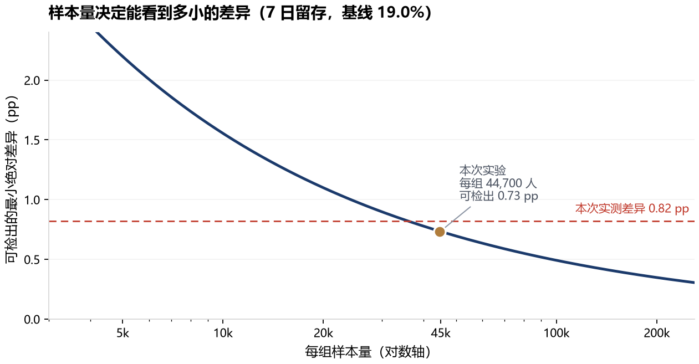
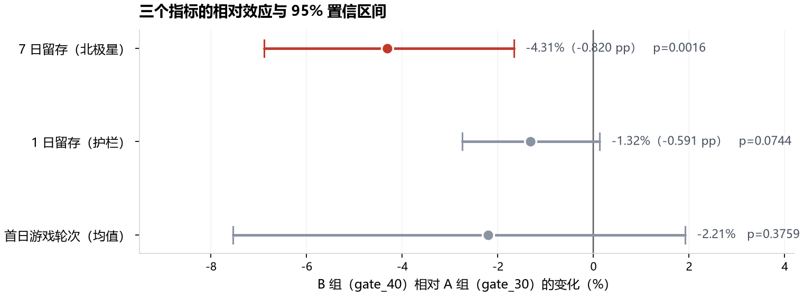
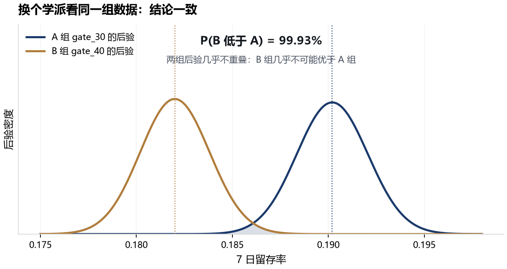
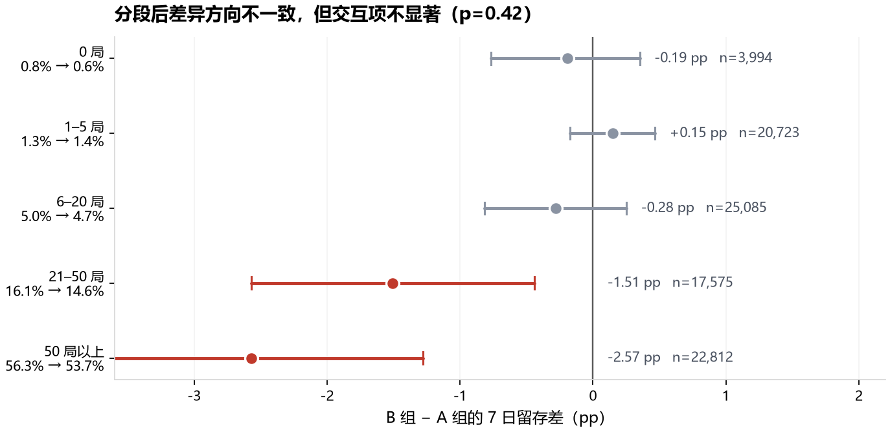
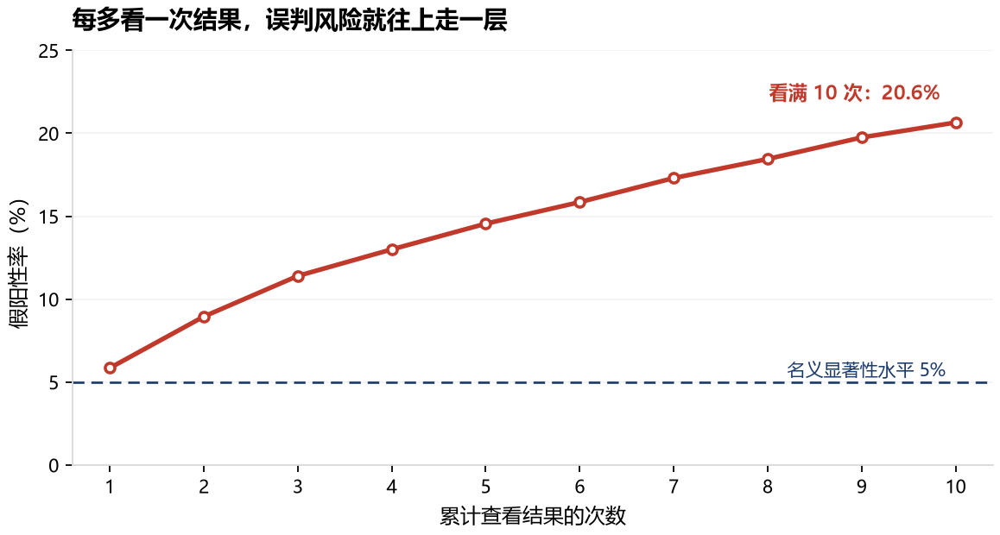

| 致 | 新手引导产品组 |
|---|---|
| 自 | 侯传阁（数据分析） |
| 日期 | 2026-11-23 |
| 事由 | gate_30 → gate_40 的 A/B 实验结果与上线建议 |
| 数据 | Tactile Entertainment 公开实验数据，90,189 名新玩家（A 组 44,700 / B 组 45,489） |
| 结论 | 不上线。7 日留存显著下降 0.82 个百分点，没有对冲证据。 |
玩家推进到某一关会撞上第一道门：等一段时间，或者付费直接过。线上版本把这道门放在第 30 关。 产品组的假设是，把它推到第 40 关、多给 10 关免费内容，新手期的挫败感会低一些， 第二天和第七天回来的概率应该更高。代价是首次付费触点被推后，短期收入可能下滑。
实验按新玩家随机分流：A 组 gate_30（对照），B 组 gate_40（实验）。 这个读数的任务是判断留存上的差异是否真实存在，以及在什么前提下这个判断会失效。
| 层级 | 指标 | A 组 | B 组 | 选它的理由 |
|---|---|---|---|---|
| 主指标 | retention_7 | 19.02% | 18.20% | 7 天跨过一次内容消耗周期，比 1 日更难被新鲜感污染 |
| 护栏 | retention_1 | 44.82% | 44.23% | 门往后推最可能伤首日体验，必须有指标盯着 |
| 辅助 | sum_gamerounds | 52.46 | 51.30 | 解释机制：留存变了，是玩多了还是玩少了 |
这个样本量能检出的最小差异是 7 日留存 0.73 pp（相对 3.84%）、 1 日留存 0.93 pp（相对 2.08%），双侧 α=0.05、power=0.80。 读后面每一个 p 值都要带着这句话：观测差异小于检出下限时，"不显著"只说明证据不足。
| 想检出的绝对差异 | 相对幅度 | 每组需要 | 总计 |
|---|---|---|---|
| 2.0 pp | 10.5% | 5,794 | 11,588 |
| 1.0 pp | 5.3% | 23,685 | 47,370 |
| 0.8 pp | 4.2% | 37,164 | 74,328 |
| 0.5 pp | 2.6% | 95,734 | 191,468 |

五个字段，90,189 行，没有缺失、没有重复 userid、没有完全重复的行。首日轮次有一个极端值： 一位 A 组玩家玩了 49,854 轮（userid 6390605）。零轮次用户 A 组 4.33%、B 组 4.52%，两组接近。
分流比例对不上：A 49.56% / B 50.44%，χ² = 6.90，p = 0.0086，偏差 0.87 个百分点。 九万人的量级上，这个偏差足以让卡方检验报警。
怎么处理：不忽略，也不推翻实验。两组的留存率都是组内均值，人数比例本身不会机械地扭曲点估计； 真正的风险在分流机制——如果失衡和结果相关（例如高活跃用户更容易落进某一组），比较就带了选择偏倚。 这份数据只有 5 个字段，没有任何分流实现的信息，这个风险在这里无法检验，只能记录在案， 靠外部复现来排除。这也是本读数最需要读者知情的一条。
| 指标 | A 组 | B 组 | 绝对差 | 相对变化 | p | 95% CI（相对） |
|---|---|---|---|---|---|---|
| 7 日留存 | 19.02% | 18.20% | −0.82 pp | −4.31% | 0.0016 | [−6.89%, −1.66%] |
| 1 日留存 | 44.82% | 44.23% | −0.59 pp | −1.32% | 0.0744 | [−2.74%, +0.13%] |
| 首日轮次（均值） | 52.46 | 51.30 | −1.16 | −2.21% | 0.3759 | [−4.13, +0.98] |

19.02% 对 18.20%，绝对差 −0.82 pp、相对 −4.31%，z = −3.16，p = 0.0016。 区间上沿是 −1.66%——取最乐观的一端，相对损失仍有 1.66%。 效应量 Cohen's h = −0.021，属于小效应；但对一个日活百万级的游戏，−0.82 pp 对应的用户规模不小。
44.82% 对 44.23%，差 −0.59 pp，p = 0.0744，区间跨 0。表面读法是两组一样，但这个读法是错的： 本次实验对 1 日留存的检出下限是 0.93 pp，观测到的 0.59 pp 还不到它。 这是证据不足，不是证据表明无差异。
均值 52.46 对 51.30，Welch p = 0.3759，看起来一样。但这个"一样"是巧合： 每组各去掉最大的一个观测，差值从 −1.16 轮缩到 −0.10 轮；中位数 17 对 16； 1% 截尾均值 45.11 对 44.83，差 −0.28 轮。 两个均值的差距几乎全部来自那位玩了 49,854 轮的玩家，不代表任何群体差异。
Mann-Whitney 的 p = 0.0502、秩二列相关 r = −0.0075——统计量擦到显著边缘，效应量小到可以忽略。 这是"统计显著不等于业务有意义"的教科书例子。

三个指标同时检验、每个都用 α=0.05，至少撞上一个假阳性的概率是 1−0.95³ ≈ 14%。 Holm 校正后，7 日留存的 p 从 0.0016 抬到 0.0047，1 日留存从 0.0744 抬到 0.1488， 首日轮次不变。判定没变，但这正是校正该做的事：让"多个指标里挑一个显著的"没法蒙混过关。
轮次中位数 17，99 分位 135，最大值 49,854。这类分布上，均值不是"平均用户"， 而是"平均用户 + 一个异常玩家的放大"。口径换成截尾均值、中位数或 bootstrap，三种结论一致： 两组首日参与度没有实质差异。

只挑"1–5 局"这一层来汇报，完全可以写出"实验对轻度玩家有正向作用"——这是 p-hacking 最日常的形态：
不是造数据，是挑一个对自己有利的切法。两个理由拒绝它：其一，版本 × 层级的交互项 p = 0.42，
方向差异本身在噪声范围内；其二，更根本的，sum_gamerounds 是实验之后才产生的变量，
按它分层等于按结果分层，会引入选择偏倚（collider bias），这一层的"提升"没有因果含义。
顺带回答经典陷阱：这次分层里没有出现完整的辛普森反转（整体与各层方向全部相反）， 但已经有了方向不一致的苗头。如果数据里真有前置协变量，正确处理是分层随机化或 CUPED 做方差缩减， 不是事后切开看。

把实验标签随机打乱 2,000 次，人为制造"两组真的没差异"的世界，再模拟每天看一次、看到显著就停： 只看 1 次假阳性率 5.9%，看满 10 次涨到 20.6%，是名义水平的四倍。 产品团队几乎一定会每天看数据，所以要么提前约定固定样本量和观察窗口，要么用序贯检验 （alpha spending、mSPRT）把"多次看"这件事本身纳入设计。先跑够，再看，是最便宜的一条纪律。
不上线 gate_40，保留 gate_30。
主指标 7 日留存显著下降 0.82 pp（相对 −4.31%，p=0.0016，Holm 校正后 0.0047），方向明确为负； 1 日留存与首日轮次没有提供任何能抵消这一损失的正向证据；贝叶斯后验给出 P(B 更差) = 99.93%。
python src/fetch.py（下载 + SHA-256 校验 5ab54d76…342c46bd）→
python src/analysis.py（全部统计检验，输出 data/metrics.json）→
python src/charts.py → python src/build_memo.py（生成本文档的 PDF）。
随机种子 20261123，全部数字可从 metrics.json 追溯。